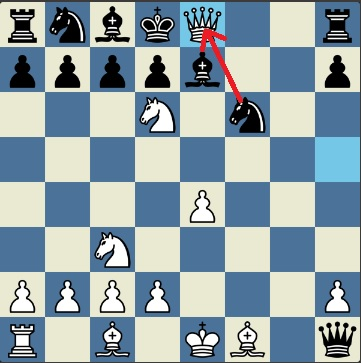
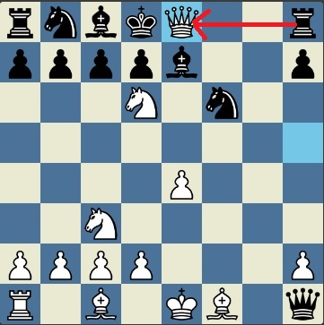

Initial puzzle given in the ex_board2.txt file is below. You are white.
Consider what happens when white plays the move h5 e8
Since black's king is under threat, it has to play either the move h8 e8 or f6 e8.
Note that these 2 moves are the only two moves that black can play.
Also note that these 2 moves are exactly the moves given in the first line of ex_opponent2.txt
f6 e8 |
h8 e8 |
|---|---|
|  | /td> |
Since the first move in the first line of ex_opponent2.txt is h8 e8, we assume black plays that move. Now the move d6 f7 is checkmate.
Since we have reached checkmate with the moves h5 e8 and d6 f7, we print these two moves to console.
Our answer is correct because we reached checkmate and also forced black to only be able to make the moves in ex_opponent2.txt
| Console Output |
|---|
| h5 e8 d6 f7 |
Note that if the solution had consisted of 3 moves instead of 2, ex_opponent2.txt would contain 2 lines instead of 1. So, if that were the case:
First move of the solution would have forced the moves in first line of ex_opponent2.txt
Second move of the solution would have forced the moves in the second line of ex_opponent2.txt
Third move of the solution would have reached checkmate.